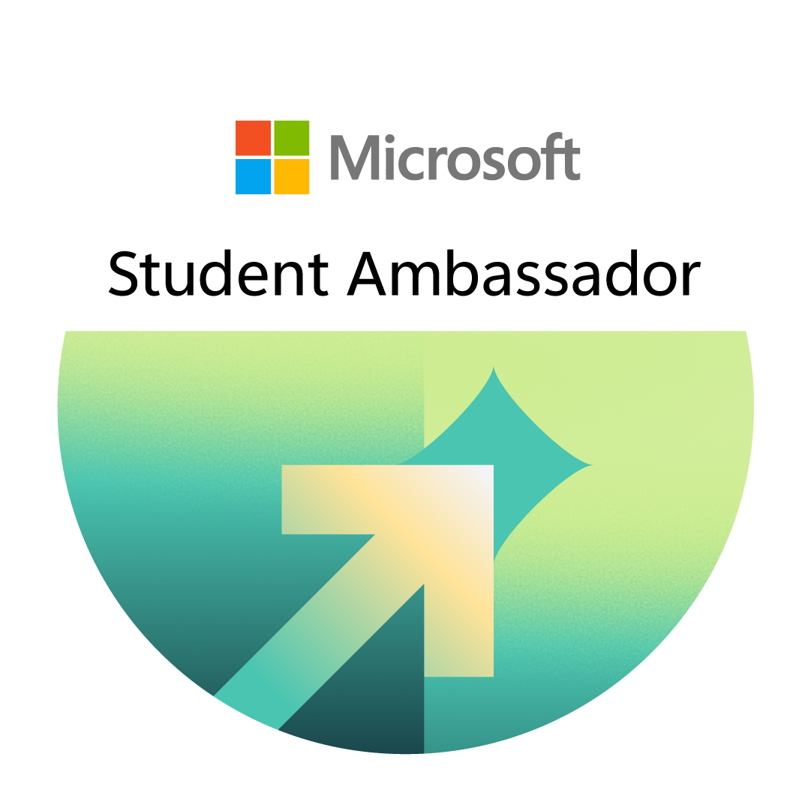
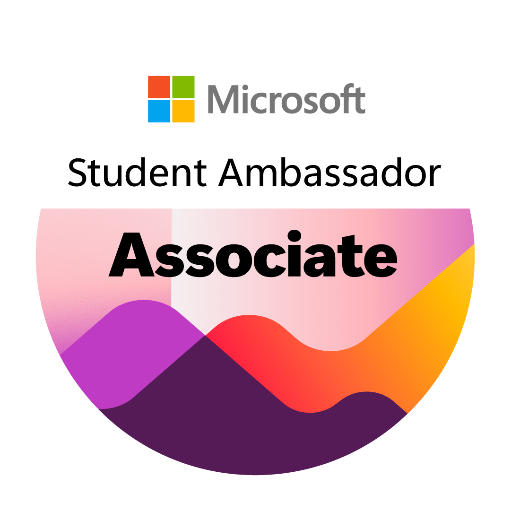

Registered Member
Cadastro concluído, acesso à comunidade inicial e preparação de uma trilha de contribuição.
Ver requisitosDo primeiro cadastro ao marco Senior, em uma jornada clara, prática e feita para a comunidade LATAM.
Atualizado em agosto de 2026
Entenda onde você está, qual é o próximo passo e quando cada título passa a valer.
Cadastro concluído, acesso à comunidade inicial e preparação de uma trilha de contribuição.
Ver requisitos
Convite aceito, onboarding concluído e início oficial no programa.
Entender o onboarding
O primeiro marco de progressão, conquistado com um evento aprovado.
Como avançarReconhecimento por consistência, liderança e impacto demonstrável.
Conhecer os critériosRegras, metas e benefícios podem mudar. Confirme os detalhes no portal, no manual do membro e nos emails oficiais da sua rodada.
O conteúdo completo, as trilhas Influencer e Skiller, a progressão e o FAQ serão carregados nesta mesma experiência.